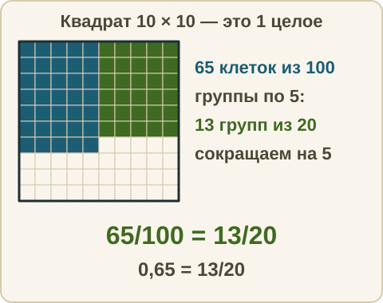
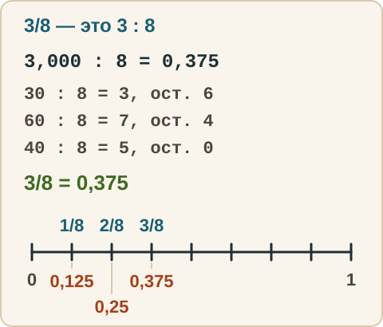
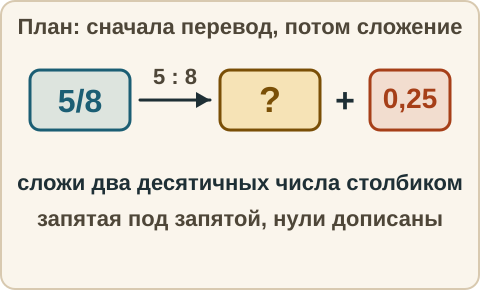

Математика: база · занятие 12Перевод дробей и итог недели
Цель: ты переводишь обыкновенную дробь в десятичную и обратно, считаешь выражения, где встречаются обе записи (задание 6 ОГЭ), и проходишь итоговый срез по неделям 1–4. Ответы и подсказки спрятаны: сначала реши сам, потом нажми кнопку.
Как записывать ответ. Число — целое число. Дробь — через черту и сокращённая до конца, например 3/4. Смешанное число — целая часть, пробел, дробь, например 2 3/4. Десятичная дробь — с запятой, например 3,25. Знак — один символ: <, > или =.
Вспомнить
Без подсказок, сразу проверка. Отмечай, на чём споткнулся, — в журнал.
- 0,4 · 0,25
- 7,2 : 0,06
- 3,6 − 1,85
- 83 · 0,01
- 3/10 · 5/6
- 5/6 + 2/9
Беглость: карточки-пары
Игра «карточки-пары». Эти пары полезно знать наизусть: они экономят время в заданиях со смешанной записью. Ошибся — пример вернётся: попробуй ещё раз. Без таймера.
Игра 1. Дробь — в десятичную.
- Запиши 1/2 десятичной дробью.
- Запиши 1/4 десятичной дробью.
- Запиши 3/4 десятичной дробью.
- Запиши 1/5 десятичной дробью.
- Запиши 2/5 десятичной дробью.
- Запиши 1/8 десятичной дробью.
- Запиши 1/20 десятичной дробью.
- Запиши 1/25 десятичной дробью.
Игра 2. Наоборот: десятичную — в обыкновенную несократимую дробь.
- Запиши 0,2 обыкновенной дробью.
- Запиши 0,75 обыкновенной дробью.
- Запиши 0,125 обыкновенной дробью.
Правило
Десятичная → обыкновенная. Прочитай десятичную дробь как дробь со знаменателем 10, 100 или 1000 (по последнему разряду) и сократи. Например, 0,65 = 65/100 = 13/20. Если есть целая часть, она остаётся: 2,4 = 2 4/10 = 2 2/5.

Обыкновенная → десятичная, способ 1. Если в знаменателе только множители 2 и 5, умножь числитель и знаменатель на одно и то же число так, чтобы знаменатель стал 10, 100 или 1000. Например, 3/20 = (3 · 5)/(20 · 5) = 15/100 = 0,15.
Обыкновенная → десятичная, способ 2. Дробная черта — знак деления (занятие 8). Раздели числитель на знаменатель, дописывая нули. Например, 3/8 = 3 : 8. Пишем 3,000 : 8 = 0,375: 30 : 8 = 3, остаток 6; 60 : 8 = 7, остаток 4; 40 : 8 = 5.

Область применимости. Так получается не всегда. Дробь 1/3 = 0,333… никогда не заканчивается: в знаменателе есть множитель 3. Такие числа в ОГЭ либо оставляют обыкновенной дробью, либо округляют. Для 1/3, 2/3, 1/7 работай с обыкновенными дробями.
В какой записи считать. Дроби «красивые» (1/2, 1/4, 1/5, 3/4, 3/20) — переводи всё в десятичные. Если есть «некрасивые» (1/3, 2/7) — переводи всё в обыкновенные.
Разобранный пример
А. 3/4 + 0,6
- Дробь «красивая»: 3/4 = 0,75, потому что знаменатель 4 превращается в 100: (3 · 25)/(4 · 25) = 75/100.
- Складываем десятичные: 0,75 + 0,6 = 1,35.
- Ответ: 1,35.
Б. 1/3 · 0,6
- Дробь 1/3 «некрасивая», поэтому переводим всё в обыкновенные: 0,6 = 6/10 = 3/5.
- 1/3 · 3/5 = 1/5.
- Ответ: 1/5 (в десятичной записи 0,2).
С подсказкой
Решай сам. Подсказку открывай, только если застрял.
- 5/8 + 0,25

Сам
Два раза не сошлось — появится кнопка «Показать решение».
- Запиши 0,45 обыкновенной дробью.
- Запиши 3,6 смешанным числом.
- Запиши 7/20 десятичной дробью.
- Запиши 5/8 десятичной дробью.
- 0,4 + 3/5
- 2/3 · 0,9
- (0,7 − 1/4) · 20
Ловушка
Ловушка. 1/4 = 0,4. Здесь знаменатель поставили после запятой. Но дробь 1/4 — это 1 : 4, а не «1 запятая 4». Проверка: 0,4 · 4 = 1,6, а не 1. Значит, ответ не сошёлся. Правильно: 1 : 4 = 0,25, и 0,25 · 4 = 1. Проверь себя: умножаю десятичную дробь обратно на знаменатель — получаю числитель?
Смесь — итоговый срез
Это итог недели 4 и всего блока «дроби»: 10 заданий по неделям 1–4. Решай сам, на бумаге, без подсказок. Результат смотри в строке «Верно: N из 10» под заданиями.
- 5 + 4 · (9 − 6)
- −5 − 8
- 5/6 − 3/8
- 3 1/4 + 2 5/6
- 7/12 · 9/14
- 3 1/3 : 5/6
- Знак: 0,709 и 0,71.
- 8,4 − 3,78
- 2,5 · 0,12
- 3/8 + 0,25
Журнал
Запиши 1–3 строки: «что перепутал → как проверить». Пример формы: «перевёл 1/4 как 0,4 → умножаю десятичную обратно на знаменатель и получаю числитель». Номера ошибочных заданий среза запиши тоже. Там же отметь результат из строки «Верно: N из 10».
- …